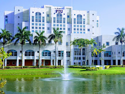

Parking
Conference parking instructions and recommended garages will be announced.
Miami, Florida
FCRAR 2027 will be held at Florida International University’s Modesto A. Maidique Campus.
Management and Advanced Research Center, Room 290
Florida International University
11200 SW 8th Street
Miami, FL 33199
The pavilion is on the second floor of the MARC building. Detailed arrival, parking, and check-in instructions will be posted before the conference.

Additional information will be added as conference arrangements are finalized.
Conference parking instructions and recommended garages will be announced.
Suggested nearby accommodations and any conference rates will be posted here.
Miami International Airport is the primary airport serving the FIU area.